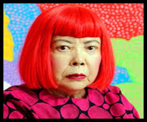

Women of the World
The women below come from a variety of disciplines,
backgrounds, and time periods. However, they have one thing in common...they are
all examples for future generations of humanity to look up to, despite gender, race
or ethnicity.

Khawlah bint al-Azwar
Khawlah bint al-Azwar (639 AD), was a Muslim woman from Saudi Arabia. She was an Arab warrior
and one of the greatest military leaders, during prophet Muhammad’s lifetime.
Malala Yousafzai
Malala Yousafzai (1997), is a strong activist for female education, from Pakistan.
Her advocacy has gained global attention and she is also the youngest person
to win a Nobel Prize.
Frida Kahlo
Frida Kahlo (1907-1954), was one of the greatest painters from Mexico. After experiencing
a bus accident, she was a famous painter, especially for her portraits and self-portraits.
Yayoi Kusama
Yayoi Kusama (1929-present), is a famous Japanese contemporary artist, who has created paintings,
sculptures and drawings. Due to her art style, she is sometimes referred to as the
“Princess of Polka Dots”.


Sanna Marin
Sanna Marin (1985-present), is the current Prime Minister of Finland (2019). She is the youngest
prime minister, and female state leader, to be elected worldwide.
Novlene Williams-Mills
Novlene Williams-Mills (1982-present), is a track and field athlete from Jamaica. She is a
three-time bronze Olympic medallist, whilst being a cancer survivor, she
promotes body positivity.
Alicia Alonso
Alicia Alonso (1920-2019), was a famous Cuban dancer. She was partially blind,
but known as an amazing ballerina for her portrayals of Giselle and Carmen.
Madam CJ Walker
Madam C. J. Walker (1867-1919), was an American entrepreneur. She invented
the world’s first hair-straightening formula, and was the first self—made female millionaire
in the United States.
Funmilayo Ransome-Kuti
Funmilayo Ransome-Kuti (1900-1978), was a Nigerian women’s rights activist and the first woman to drive a car,
in Nigeria. She was also the mother of the revolutionary musician, Fela Kuti.
Ragnhild Mowinckel
Ragnhild Mowinckel (1992-present), is Alpine ski racer, from Norway. She won the Junior World
Championship at the age of 19.
Halet Cambel
Halet Cambel (1916-2014), was a Turkish archaeologist and Olympic fencer born in Berlin (German Empire 1871-1918).
She was the first Muslim woman to compete in the Olympic Games.
Eva Peron
María Eva Duarte (1919-1952), better known as Eva Peron. Was born into poverty, however
she overcame many obstacles to rise to the First Lady of Argentina(1946-1952).
She founded The Eva Perón Foundation to help the poor, she fought for women’s suffrage, and her
iconic outfits changed the face of politics.